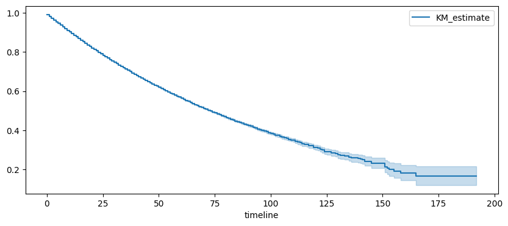

Analyse de survie en pratique#
Quelques données#
On récupère les données disponibles sur open.data.gouv.fr Données hospitalières relatives à l’épidémie de COVID-19. Ces données ne permettent pas de construire la courbe de Kaplan-Meier. On sait combien de personnes rentrent et sortent chaque jour mais on ne sait pas quand une personne qui sort un 1er avril est entrée.
[17]:
import numpy.random as rnd
import pandas
df = pandas.read_csv(
"https://www.data.gouv.fr/fr/datasets/r/63352e38-d353-4b54-bfd1-f1b3ee1cabd7",
sep=";",
)
gr = df[["jour", "rad", "dc"]].groupby(["jour"]).sum()
diff = gr.diff().reset_index(drop=False)
diff.head()
[17]:
| jour | rad | dc | |
|---|---|---|---|
| 0 | 2020-03-18 | NaN | NaN |
| 1 | 2020-03-19 | 695.0 | 207.0 |
| 2 | 2020-03-20 | 806.0 | 248.0 |
| 3 | 2020-03-21 | 452.0 | 151.0 |
| 4 | 2020-03-22 | 608.0 | 210.0 |
[18]:
def donnees_artificielles(hosp, mu=14, nu=21):
dt = pandas.to_datetime(hosp["jour"])
res = []
for i in range(hosp.shape[0]):
date = dt[i].dayofyear
h1 = hosp.iloc[i, 1]
h2 = hosp.iloc[i, 2]
if h1 < 0 or h2 < 0:
continue
delay1 = rnd.exponential(mu, int(h1))
for j in range(delay1.shape[0]):
res.append([date - int(delay1[j]), date, 1])
delay2 = rnd.exponential(mu, int(h2))
for j in range(delay2.shape[0]):
res.append([date - int(delay2[j]), date, 0])
return pandas.DataFrame(res, columns=["entree", "sortie", "issue"])
data = donnees_artificielles(diff[1:].reset_index(drop=True)).sort_values("entree")
data.head()
[18]:
| entree | sortie | issue | |
|---|---|---|---|
| 1905678 | -148 | 3 | 1 |
| 577877 | -147 | 40 | 1 |
| 1126578 | -140 | 6 | 1 |
| 1140232 | -140 | 11 | 1 |
| 1205621 | -131 | 26 | 1 |
Chaque ligne est une personne, entree est le jour d’entrée à l’hôpital, sortie celui de la sortie, issue, 0 pour décès, 1 pour en vie.
[19]:
data.describe()
[19]:
| entree | sortie | issue | |
|---|---|---|---|
| count | 1.993886e+06 | 1.993886e+06 | 1.993886e+06 |
| mean | 1.481621e+02 | 1.616597e+02 | 8.642781e-01 |
| std | 1.152239e+02 | 1.143726e+02 | 3.424931e-01 |
| min | -1.480000e+02 | 1.000000e+00 | 0.000000e+00 |
| 25% | 5.100000e+01 | 6.400000e+01 | 1.000000e+00 |
| 50% | 1.130000e+02 | 1.250000e+02 | 1.000000e+00 |
| 75% | 2.600000e+02 | 2.750000e+02 | 1.000000e+00 |
| max | 3.660000e+02 | 3.660000e+02 | 1.000000e+00 |
Il y a environ 80% de survie dans ces données.
[20]:
import numpy
duree = data.sortie - data.entree
deces = (data.issue == 0).astype(numpy.int32)
[21]:
import numpy
import matplotlib.pyplot as plt
from lifelines import KaplanMeierFitter
fig, ax = plt.subplots(1, 1, figsize=(10, 4))
kmf = KaplanMeierFitter()
kmf.fit(duree, deces)
kmf.plot(ax=ax)
ax.legend();

Régression de Cox#
On reprend les données artificiellement générées et on ajoute une variable identique à la durée plus un bruit mais quasi nul
[22]:
import pandas
data_simple = pandas.DataFrame(
{
"duree": duree,
"deces": deces,
"X1": duree * 0.57 * deces + numpy.random.randn(duree.shape[0]),
"X2": duree * (-0.57) * deces + numpy.random.randn(duree.shape[0]),
}
)
data_simple.head()
[22]:
| duree | deces | X1 | X2 | |
|---|---|---|---|---|
| 1905678 | 151 | 0 | 0.650961 | -1.128843 |
| 577877 | 187 | 0 | -1.956525 | 0.108041 |
| 1126578 | 146 | 0 | 0.026987 | -0.130392 |
| 1140232 | 151 | 0 | 1.149385 | 0.280224 |
| 1205621 | 157 | 0 | -0.032398 | 0.400499 |
[23]:
from sklearn.model_selection import train_test_split
data_train, data_test = train_test_split(data_simple, test_size=0.8)
[24]:
from lifelines.fitters.coxph_fitter import CoxPHFitter
cox = CoxPHFitter()
cox.fit(
data_train[["duree", "deces", "X1"]],
duration_col="duree",
event_col="deces",
show_progress=True,
)
Iteration 1: norm_delta = 5.01e-01, step_size = 0.9500, log_lik = -647954.57157, newton_decrement = 1.86e+04, seconds_since_start = 2.0
Iteration 2: norm_delta = 1.29e-01, step_size = 0.9500, log_lik = -668348.17665, newton_decrement = 2.19e+04, seconds_since_start = 4.2
Iteration 3: norm_delta = 8.30e-02, step_size = 0.9500, log_lik = -642917.75741, newton_decrement = 4.33e+03, seconds_since_start = 6.2
Iteration 4: norm_delta = 3.36e-02, step_size = 1.0000, log_lik = -637879.13496, newton_decrement = 4.09e+02, seconds_since_start = 8.5
Iteration 5: norm_delta = 3.94e-03, step_size = 1.0000, log_lik = -637443.76633, newton_decrement = 4.61e+00, seconds_since_start = 10.7
Iteration 6: norm_delta = 4.65e-05, step_size = 1.0000, log_lik = -637439.12353, newton_decrement = 6.25e-04, seconds_since_start = 13.0
Iteration 7: norm_delta = 6.33e-09, step_size = 1.0000, log_lik = -637439.12291, newton_decrement = 1.16e-11, seconds_since_start = 15.1
Convergence success after 7 iterations.
[24]:
<lifelines.CoxPHFitter: fitted with 398777 total observations, 344439 right-censored observations>
[25]:
cox.print_summary()
| model | lifelines.CoxPHFitter |
|---|---|
| duration col | 'duree' |
| event col | 'deces' |
| baseline estimation | breslow |
| number of observations | 398777 |
| number of events observed | 54338 |
| partial log-likelihood | -637439.12 |
| time fit was run | 2024-10-07 10:42:15 UTC |
| coef | exp(coef) | se(coef) | coef lower 95% | coef upper 95% | exp(coef) lower 95% | exp(coef) upper 95% | cmp to | z | p | -log2(p) | |
|---|---|---|---|---|---|---|---|---|---|---|---|
| X1 | 0.06 | 1.06 | 0.00 | 0.06 | 0.06 | 1.06 | 1.06 | 0.00 | 176.66 | <0.005 | inf |
| Concordance | 0.75 |
|---|---|
| Partial AIC | 1274880.25 |
| log-likelihood ratio test | 21030.90 on 1 df |
| -log2(p) of ll-ratio test | inf |
[26]:
cox2 = CoxPHFitter()
cox2.fit(
data_train[["duree", "deces", "X2"]],
duration_col="duree",
event_col="deces",
show_progress=True,
)
cox2.print_summary()
Iteration 1: norm_delta = 5.01e-01, step_size = 0.9500, log_lik = -647954.57157, newton_decrement = 1.86e+04, seconds_since_start = 2.4
Iteration 2: norm_delta = 1.31e-01, step_size = 0.9500, log_lik = -668036.09368, newton_decrement = 2.18e+04, seconds_since_start = 5.0
Iteration 3: norm_delta = 8.29e-02, step_size = 0.9500, log_lik = -642745.26291, newton_decrement = 4.23e+03, seconds_since_start = 7.2
Iteration 4: norm_delta = 3.27e-02, step_size = 1.0000, log_lik = -637838.96866, newton_decrement = 3.84e+02, seconds_since_start = 9.4
Iteration 5: norm_delta = 3.70e-03, step_size = 1.0000, log_lik = -637430.64477, newton_decrement = 4.03e+00, seconds_since_start = 11.5
Iteration 6: norm_delta = 4.05e-05, step_size = 1.0000, log_lik = -637426.59011, newton_decrement = 4.72e-04, seconds_since_start = 13.6
Iteration 7: norm_delta = 4.77e-09, step_size = 1.0000, log_lik = -637426.58963, newton_decrement = 6.55e-12, seconds_since_start = 15.7
Convergence success after 7 iterations.
| model | lifelines.CoxPHFitter |
|---|---|
| duration col | 'duree' |
| event col | 'deces' |
| baseline estimation | breslow |
| number of observations | 398777 |
| number of events observed | 54338 |
| partial log-likelihood | -637426.59 |
| time fit was run | 2024-10-07 10:42:35 UTC |
| coef | exp(coef) | se(coef) | coef lower 95% | coef upper 95% | exp(coef) lower 95% | exp(coef) upper 95% | cmp to | z | p | -log2(p) | |
|---|---|---|---|---|---|---|---|---|---|---|---|
| X2 | -0.06 | 0.94 | 0.00 | -0.06 | -0.06 | 0.94 | 0.95 | 0.00 | -176.68 | <0.005 | inf |
| Concordance | 0.75 |
|---|---|
| Partial AIC | 1274855.18 |
| log-likelihood ratio test | 21055.96 on 1 df |
| -log2(p) of ll-ratio test | inf |
[27]:
cox.predict_cumulative_hazard(data_test[:5])
[27]:
| 1369970 | 834048 | 1217055 | 1119706 | 1444869 | |
|---|---|---|---|---|---|
| 0.0 | 0.008909 | 0.008111 | 0.020118 | 0.008601 | 0.008080 |
| 1.0 | 0.017592 | 0.016017 | 0.039727 | 0.016985 | 0.015956 |
| 2.0 | 0.026273 | 0.023921 | 0.059330 | 0.025366 | 0.023830 |
| 3.0 | 0.035119 | 0.031975 | 0.079308 | 0.033908 | 0.031854 |
| 4.0 | 0.043795 | 0.039875 | 0.098901 | 0.042284 | 0.039724 |
| ... | ... | ... | ... | ... | ... |
| 156.0 | 0.532402 | 0.484742 | 1.202293 | 0.514034 | 0.482903 |
| 158.0 | 0.538375 | 0.490181 | 1.215783 | 0.519801 | 0.488322 |
| 163.0 | 0.538375 | 0.490181 | 1.215783 | 0.519801 | 0.488322 |
| 170.0 | 0.538375 | 0.490181 | 1.215783 | 0.519801 | 0.488322 |
| 186.0 | 0.538375 | 0.490181 | 1.215783 | 0.519801 | 0.488322 |
151 rows × 5 columns
[28]:
cox.predict_survival_function(data_test[:5])
[28]:
| 1369970 | 834048 | 1217055 | 1119706 | 1444869 | |
|---|---|---|---|---|---|
| 0.0 | 0.991131 | 0.991922 | 0.980083 | 0.991435 | 0.991952 |
| 1.0 | 0.982562 | 0.984111 | 0.961052 | 0.983159 | 0.984170 |
| 2.0 | 0.974069 | 0.976363 | 0.942396 | 0.974953 | 0.976452 |
| 3.0 | 0.965490 | 0.968530 | 0.923755 | 0.966661 | 0.968648 |
| 4.0 | 0.957150 | 0.960910 | 0.905833 | 0.958597 | 0.961055 |
| ... | ... | ... | ... | ... | ... |
| 156.0 | 0.587193 | 0.615856 | 0.300504 | 0.598078 | 0.616989 |
| 158.0 | 0.583696 | 0.612516 | 0.296478 | 0.594639 | 0.613656 |
| 163.0 | 0.583696 | 0.612516 | 0.296478 | 0.594639 | 0.613656 |
| 170.0 | 0.583696 | 0.612516 | 0.296478 | 0.594639 | 0.613656 |
| 186.0 | 0.583696 | 0.612516 | 0.296478 | 0.594639 | 0.613656 |
151 rows × 5 columns
[14]:
[15]: